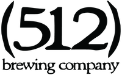
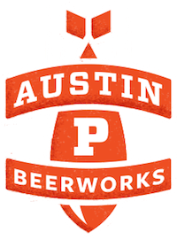
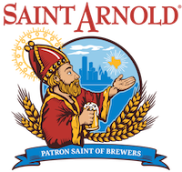
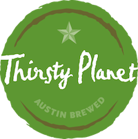
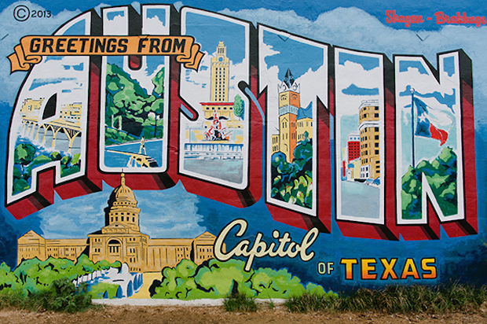

<!DOCTYPE html>
<html>
  <head>
    <meta charset="utf-8">
    <title>News-Website</title>
    <link rel="stylesheet" href="./css/style.css">
  </head>
  <body>
    <header>Texas Breweries</header>
    <div class="grid">
      <div class="box1">
        <div id="logo"></div>
        <p>Like AUSTIN, (512) brewing is DIFFERENT…. A little WEIRD, even? We’re pioneers in craft beer, especially in our local market. When we began in 2008, there were only 2 other breweries in Austin and no dominant IPA. Our local draft market was full of Ambers and Lagers. They were great, but this was during the IPA boom!… Now (512) IPA is the IPA of Austin, especially on draft, and our legendary Pecan Porter and Whiskey Barrel Aged Double Pecan Porter (WBADPP) are sought after around the country. FIERCELY 100% INDEPENDENT 100% SELF-DISTRIBUTED DRAFT FOCUSED ORGANIC MALTNON-GMO VEGAN UN-FILTERED / UN-FINED UNPASTEURIZED DON’T MISS THE CHANCE TO HAVE A (512) WHEN YOU SEE IT!</p>
      </div>
      <div class="box2">
        <div id="logo2"></div>
        <p>Why Only Cans? 1) Quality. 2) Ecology. 3) Tubing. Beer always tastes better out of a keg, right? Think of our cans as tiny kegs. Inside these protective metal grenades our beer is less susceptible to degradation. Cans get cold faster and the beer stays gooder longer. Then there’s big momma earth. The impact of recyclable cans on the environment is remarkably less than bottles. Plus, you can’t take bottles tubing. And that leads to the host of little reasons cans are great: 1) Drinkability B) Toss-ability 3) Wizard Staff-ability.</p>
      </div>
      <div class="box3">
        <div id="logo3"></div>
        <p>Saint Arnold Brewing Company, located in Houston, is Texas' Oldest Craft Brewery. Our goal is to brew world class beers and deliver them to our customers as fresh as possible making them the best beers in Texas and Louisiana. Our customers are beer lovers - people that appreciate great, full-flavored beers. Our small crew does everything at the brewery: brew the beer, filter the beer, keg the beer, bottle the beer, sell the beer and drink the beer. For us, this is a passion, not a job. We believe that this comes through in the beers we make. Our beers have soul. We brew several different beers; some are year round, some are seasonal and a few are single batch brews. They are available in bars, restaurants, grocery stores, liquor stores and warehouse stores throughout Texas and Louisiana. Our first keg of beer was shipped on June 9, 1994. Founded by Brock Wagner and Kevin Bartol, we chose Houston because, other than living here, this was the largest city in the country that did not have a microbrewery. Brock was a longtime homebrewer and had considered opening a brewery as far back as college, although that was quickly dismissed as a silly idea. Seven years after graduating, Brock revisited the idea, enlisted Kevin's help and the brewery was off and running. Kevin has since left the business after a bitter battle. (Just kidding - but don't you wish people wrote that when it was the truth?). Please visit us if you are in Houston. Our Brewery and Beer Hall is open Monday through Saturday. Cheers!
        </p>
      </div>
      <div class="box4">
        <div id="logo4"></div>
        <p>At Thirsty Planet Brewing, Co., we believe our purpose is multi-faceted. It begins with just good, old-fashioned passion for beer. We are inspired by the history of beer, its humble, but amazing beginnings, the way it brings people together, and its unbelievable versatility. We believe that the best way to share our enthusiasm for life is through the perfect beer. Our Thirsty Planet crew is devoted to brewing with a purpose and are committed to quenching the thirst of this planet through each sip of beer and through the charitable organizations we support. Gratuities from our tasting room are donated to a different charity each month, every year over half of the proceeds from our Silverback Pale Ale sales support the Mountain Gorilla Conservation Fund, and each year we donate to and sponsor as many local charities as possible. We strive to keep the planet’s well-being in mind during our day to day operations. Our spent grain is donated to local farmers for animal feed, our yeast and trube goes to a local composting facility, and we recycle all cardboard, paper, and glass products here at the brewery. We owe our success to the wonderful resources our environment has provided us and to all of our Thirsty Planet fans out there. We think the world of you guys. So come see our beautiful tasting room in the Texas Hill Country and drink a beer with us. Let’s cheers a pint to the planet! If you are a local Austin charity that is Thirsty Planet worthy, email us at info@thirstyplanet.net. Brewed with Passion, Committed to the Planet.
        </p>
      </div>
      <div class="box5">
        <div id="logo5"></div>
        <p>One reason we named the brewery Karbach Brewing Co. is because we’re located on Karbach Street. Even more important to us, though, is the fact that the Karbach Street warehouse was the site Ken and Chuck started their beer distribution company decades ago. Lots of great beer has moved through the warehouse over the years, and now it is time to add our own to that list. Karbach is also a village in Bavaria. We hear they drink a lot of great beer there. In 2016, Karbach Brewing partnered with The High End, a business unit of Anheuser-Busch, joining its family of craft brands. Our co-founders, management team, and all of our great employees continue to produce innovative and traditional beers on Karbach Street in Houston, Texas.</p>
      </div>
      <div class="box6">
        <div id="logo6"></div>
      </div>
    </div>
  </body>
</html>
